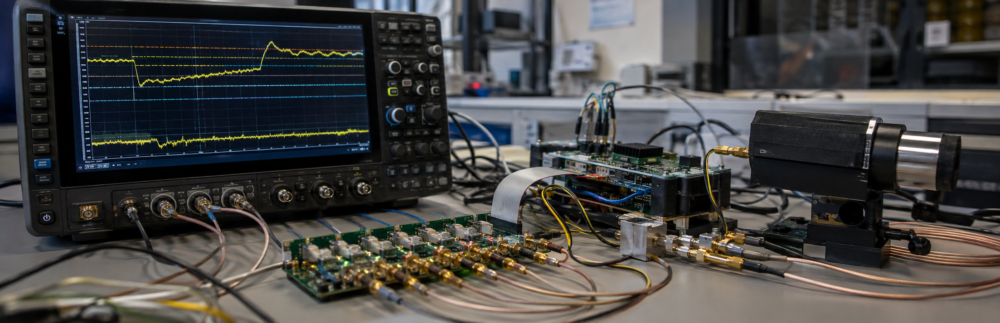
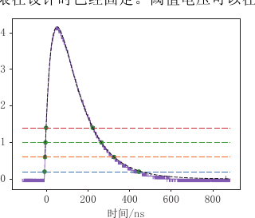
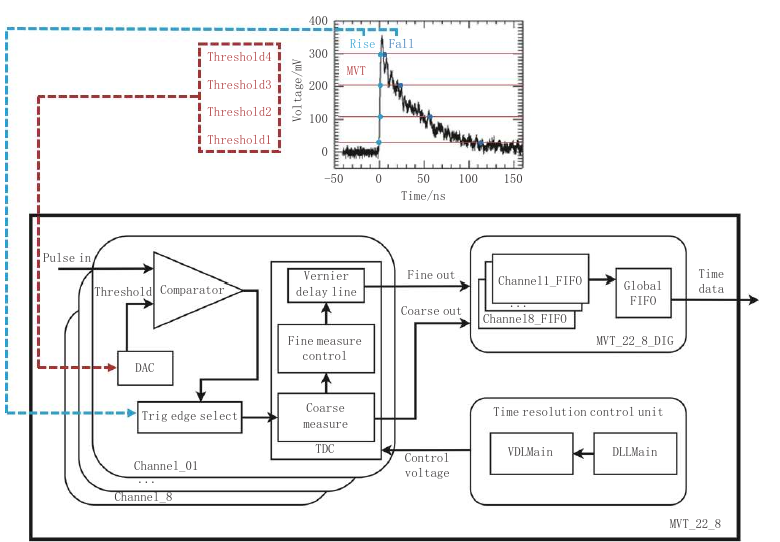
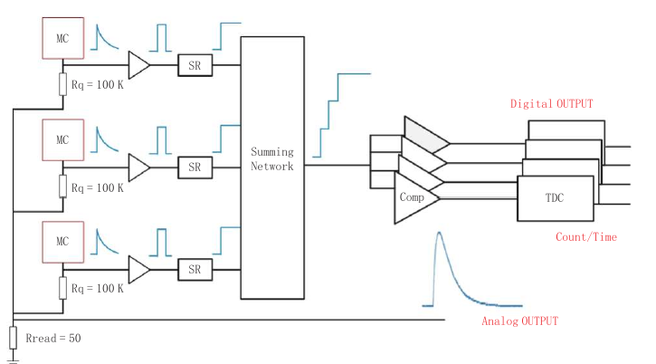

Sampling by Voltage, Not the Clock: How MVT Digitizes Fast Scintillation Pulses
Scintillation pulses in PET rise quickly and last only a short time. A conventional analog-to-digital converter can record them faithfully by sampling at a very high clock rate. But a PET scanner may contain thousands of channels; deploying high-speed ADCs everywhere rapidly increases cost, power, heat, and data bandwidth.
Analog shaping is often used to widen a pulse so slower electronics can measure it. Shaping also changes the waveform and may sacrifice timing detail. Multi-voltage threshold (MVT) digitization takes a different route: instead of measuring voltage at uniformly spaced times, it records the times at which the signal crosses several voltage levels.
From a time grid to a value grid

For a pulse that rises and then falls, every reachable threshold usually supplies two intersections. Combining these crossing times with a prior pulse model allows amplitude and onset time to be estimated. The number of thresholds is fixed by the hardware; it does not increase merely because the signal changes faster. That makes MVT naturally suited to steep pulses.
This adaptivity has limits. If a signal never reaches a threshold, it leaves no crossing there. If the assumed model does not describe the real pulse, the fit will still be biased. MVT reduces the hardware and data needed for uniform high-speed sampling; it does not recover a complete waveform from no prior knowledge.
How comparators, TDCs, and DACs work together

- DAC: generates programmable reference voltages that place samples in the value domain;
- Comparator: flips its digital output when the pulse crosses a reference, converting an analog intersection into an edge;
- TDC: measures the edge time precisely and passes records from many channels to the host computer.
When no pulse fires a comparator, this event-driven circuit need not sample continuously at high speed, creating an opportunity to save power. Accuracy still depends on the entire chain: power and DAC noise move threshold levels; comparator offset and delay move intersections; TDC resolution and nonlinearity move the time stamps.
Early designs can integrate TDCs and control logic in an FPGA for rapid iteration. For a high-channel-count scanner, an application-specific integrated circuit can remove redundant components. The reviewed MVT ASIC used a TSMC 55 nm process, measured approximately 2,524 μm × 2,280 μm, and implemented eight channels for a future all-digital PET system.
More thresholds are not automatically better
Too few levels leave the pulse weakly constrained; too many consume comparators, TDC resources, and bandwidth. With large pulses, fixed thresholds can cluster samples in the lower voltage range and create nonlinear energy response. Thresholds should follow the task: timing emphasizes the rising edge, while energy estimation needs useful coverage of amplitude and decay.
Pulse pile-up is another challenge. When a second event arrives before the first has decayed, their crossing sequences can overlap. Signals below the lowest level also fall into a blind region. Calibration, baseline tracking, pulse separation, and stronger statistical models are essential as MVT moves toward higher count rates.
From analog SiPM pulses to count staircases

MVT can also be coupled directly to SiPM readout. Fired microcells create steps, a summing network produces a count signal that grows over time, and multiple count thresholds record when selected levels are reached. Statistical relationships between microcell firing and incident photons can then be used to estimate the photon arrival sequence.
This route may achieve highly integrated readout without allowing digital circuitry to consume too much photosensitive area. It also depends even more strongly on prior models of scintillation generation, transport, and detection. Dark counts, crosstalk, and saturation change the meaning of the staircase. Multiple-count thresholds are physically informed compressed measurements, not simply fewer comparators.
One method, several radiation-measurement problems
MVT has been used in all-digital PET, X-ray security inspection, and radiation-dose monitoring, with demonstrations in neutron oil-well logging, proton-therapy monitoring, and fusion-neutron observation. These applications share fast pulses, many channels, and a need to preserve key timing and energy information at manageable power.
The next frontier is not only a faster board or chip, but a systematic theory of value-domain sampling: which pulses can be stably recovered from which thresholds, how levels should change with noise and task, and how model errors propagate into measurements. Answering those questions can turn MVT from a successful engineering technique into a predictable and comparable measurement method.
This feature independently interprets and rewrites “Multi-Voltage Threshold Digitization Method” by Ao Qiu and Qingguo Xie. The Chinese-language article appeared in CT Theory and Applications, 2024, 33(4), 393–403. DOI: 10.15953/j.ctta.2024.011.